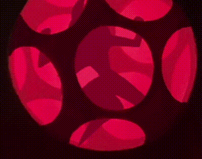
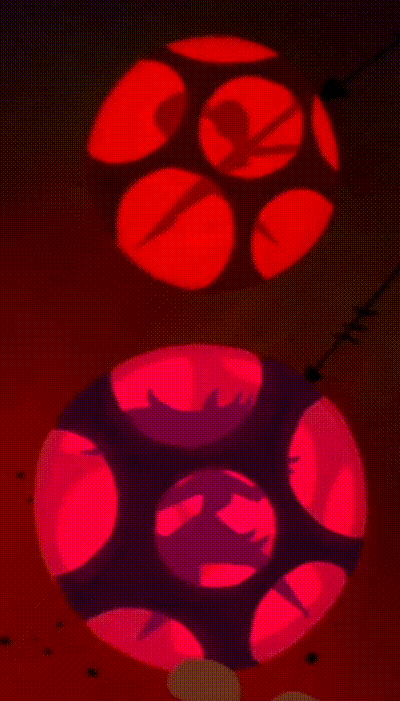
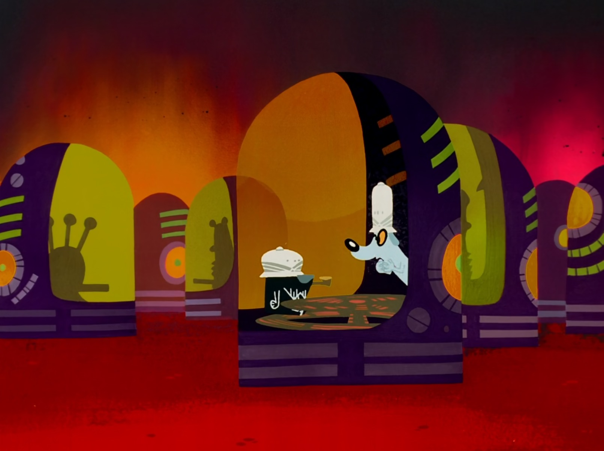
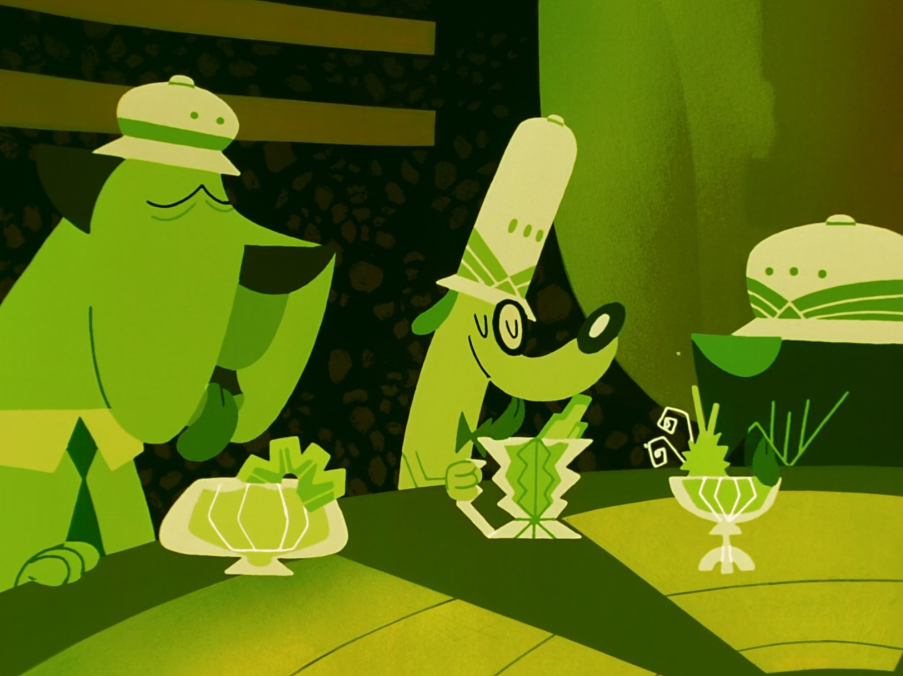

I think about this scene from samurai jack often. The silhouettes of the gogo dancers in the rainbow spheres hanging from the ceiling, genius.

There should be soundproof pods like this at every rave and venue, to take a break, indoor smoking and non-smoking, chill with the homies and have a drink or convo in silence, maybe with the option to turn on the music playing at the dj booth.


I want these drinks. Probably blasting dubstep in there. You think if dogs had a fav genre of music it would probabaly be happy hardcore or dubstep or something. Cats probably listen to IDM or like big name ambient artists like Brian Eno or William Basinski.